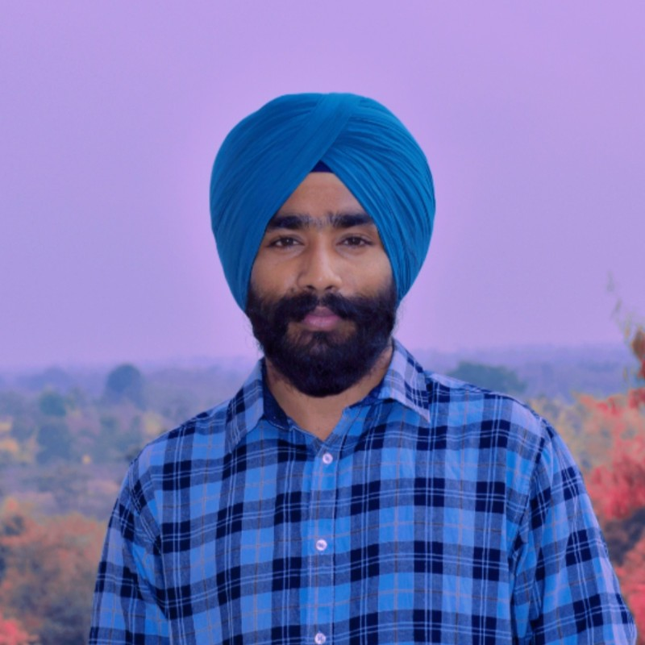

ANRF National Post-Doctoral Fellow — Indian Institute of Technology Ropar
Applied mathematician specialising in spectral methods and high-order numerical techniques for time-dependent nonlinear partial differential equations. My research develops robust, computationally efficient algorithms—to tackle smooth and non-smooth solutions of complex equations arising in fluid dynamics and mathematical physics.

My research lies at the intersection of numerical analysis, spectral methods, and the theory of partial differential equations. I focus on developing computationally efficient, high-order algorithms for nonlinear and fractional PDEs — particularly problems in fluid dynamics and mathematical physics.
I welcome research collaborations, visiting positions, and discussions on spectral methods for challenging PDE problems.